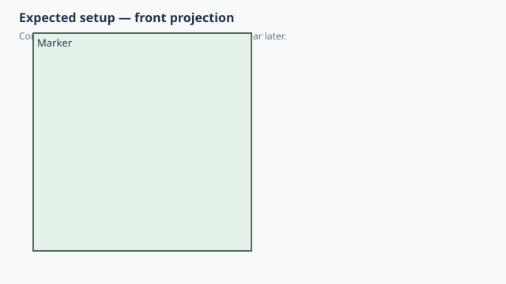

← Qualification / Named oriented AnchorFrame
Forge qualification case
NOT RUNQ1 Q2 documented
Named oriented AnchorFrame
1. Test setup

Test goal
Verify that a reusable component can publish a named attachment datum with both position and orientation.
Pass criteria
After the arm rotates 90 degrees about Z, the marker remains attached to the rotated tip with the authored frame orientation.
2. Implementation under test
Fixture source
class Arm:
def anchors(self):
return {
"tip": AnchorFrame(
origin=(20, 0, 5),
z=(1, 0, 0),
x=(0, 0, 1),
),
}
def build(self):
return Box(40, 10, 10)
class Marker:
def anchors(self):
return {
"mount": AnchorFrame(
origin=(0, 0, 5),
z=(-1, 0, 0),
x=(0, 0, 1),
),
}
def build(self):
return Box(10, 10, 10)
class CustomAnchor:
def build(self):
arm = Arm().rotate(Axis.Z, 90)
marker = Marker().attach(
arm,
parent="tip",
child="mount",
)
return arm + marker
CustomAnchor()
Public Forge API used
anchors() -> {'tip': AnchorFrame(origin=..., z=..., x=...)}; attach(parent='tip', child='mount')
Forge model represented by this fixture
AnchorFrame is explicitly a local frame: origin plus Z axis and X axis. It is not merely a named point.
3. Generated SolidCraft relationship
For the rotated parent occurrence Forge materializes/uses the native joint-origin path so SolidCraft owns the occurrence rotation.
Show generated relationship / command details
[
{
"command": "joint.origin",
"params": {
"name": "Arm:1.tip",
"occurrence": "Arm:1",
"frame": {
"origin": [
20.0,
0.0,
5.0
],
"z": [
1.0,
0.0,
0.0
],
"x": [
0.0,
0.0,
1.0
]
}
}
},
{
"command": "joint.create",
"params": {
"type": "rigid",
"name": "Attach Marker:1 to Arm:1",
"a": "Arm:1.tip",
"b": {
"occurrence": "Marker:1",
"point": [
20.0,
0.0,
5.0
],
"z": [
-1.0,
0.0,
0.0
],
"x": [
0.0,
0.0,
1.0
]
}
}
}
]3. Results
Native result data was not supplied to this site build. Run the native qualification for measured results.
No source-matched native verification was supplied to this site build. The case sheet and command contract are still shown.
6. Evidence and references
Raw evidence
Show generated files and measurements
Reference models
These comparisons clarify concepts; Forge does not promise API compatibility with them.
- BOSL2: Closest conceptual match: an anchor defines position, local Z direction and spin/orientation information.